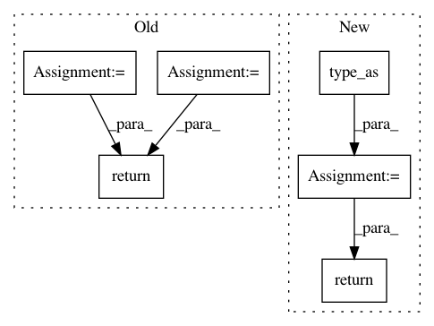

27568a7ebed1a35f08ac0390f35b3de9b8dad0dd,fairseq/models/levenshtein_transformer.py,LevenshteinTransformerModel,initialize_output_tokens,#LevenshteinTransformerModel#Any#Any#,491
Before Change
return [output_tokens, output_scores, attn, 0, 0]
def initialize_output_tokens(self, encoder_out, src_tokens):
initial_output_tokens = torch.cat(
[
torch.zeros(src_tokens.size(0), 1).fill_(self.bos),
torch.zeros(src_tokens.size(0), 1).fill_(self.eos),
],
1,
)
initial_output_scores = torch.zeros_like(initial_output_tokens).to(
encoder_out[0]
)
initial_attn = torch.empty([0])
if getattr(self.decoder.layers[-1], "need_attn", True):
initial_attn = torch.zeros([src_tokens.size(0), 2, src_tokens.size(1)]).to(
initial_output_tokens
)
return [initial_output_tokens, initial_output_scores, initial_attn, 0, 0]
class LevenshteinTransformerDecoder(TracingTransformerDecoder):
def __init__(self, args, dictionary, embed_tokens, no_encoder_attn=False):
After Change
initial_output_tokens[:, 0] = self.bos
initial_output_tokens[:, 1] = self.eos
initial_output_scores = initial_output_tokens.new_zeros(
*initial_output_tokens.size()
).type_as(encoder_out.encoder_out)
return DecoderOut(
output_tokens=initial_output_tokens,
output_scores=initial_output_scores,
attn=None,
step=0,
max_step=0,
)
class LevenshteinTransformerDecoder(TransformerDecoder):
def __init__(self, args, dictionary, embed_tokens, no_encoder_attn=False):
In pattern: SUPERPATTERN
Frequency: 3
Non-data size: 6
Instances
Project Name: pytorch/fairseq
Commit Name: 27568a7ebed1a35f08ac0390f35b3de9b8dad0dd
Time: 2019-11-13
Author: myleott@fb.com
File Name: fairseq/models/levenshtein_transformer.py
Class Name: LevenshteinTransformerModel
Method Name: initialize_output_tokens
Project Name: cornellius-gp/gpytorch
Commit Name: 33ef02d09c16aaf5191115d0a6a3d3a9b6242ba1
Time: 2019-11-08
Author: gardner.jake@gmail.com
File Name: gpytorch/utils/lanczos.py
Class Name:
Method Name: lanczos_tridiag_to_diag